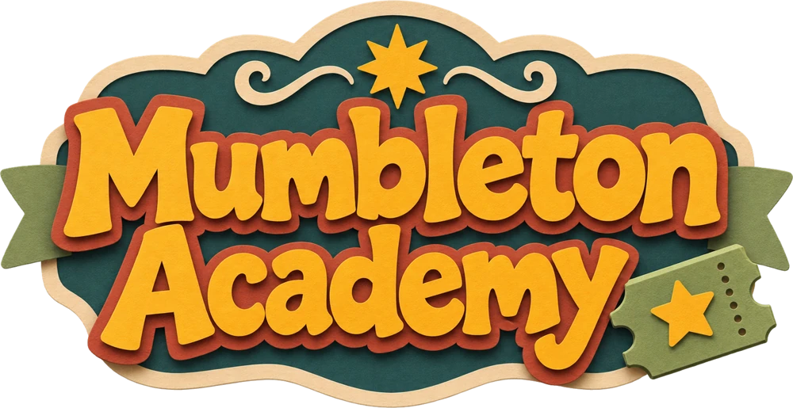
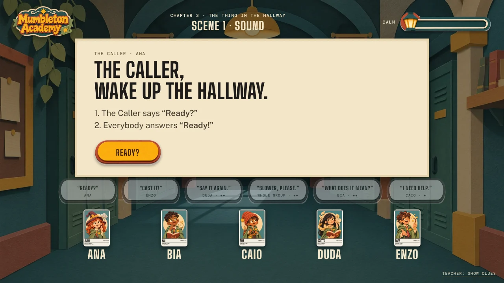
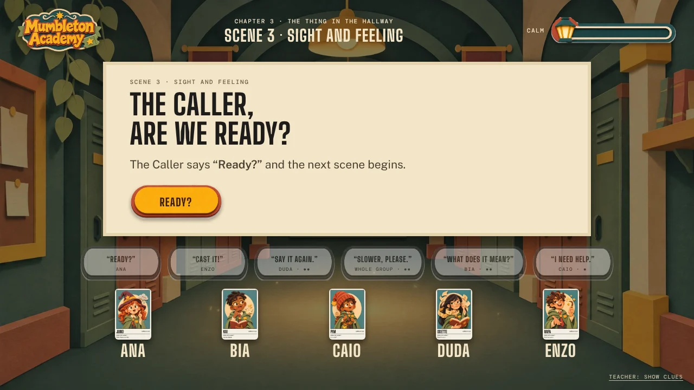
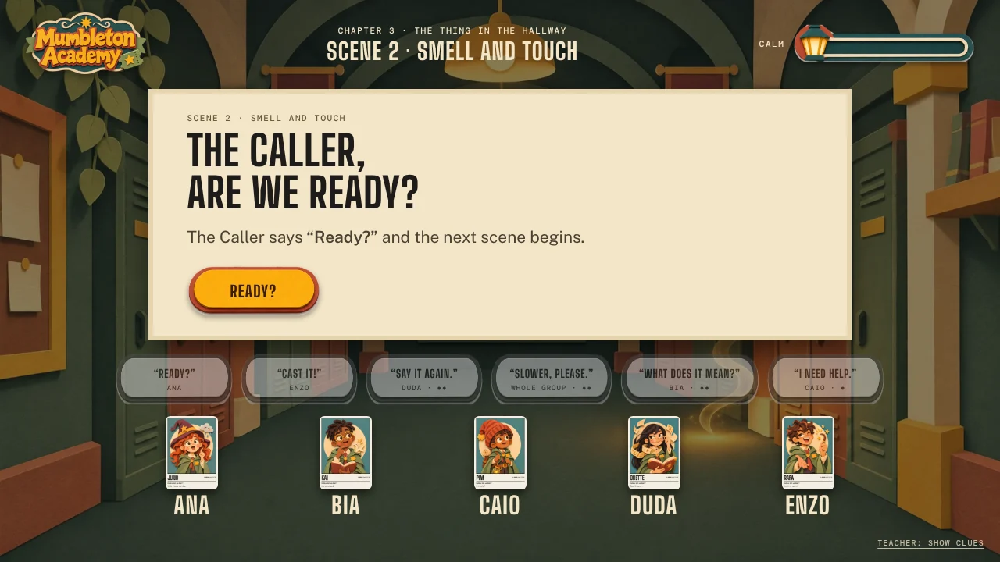
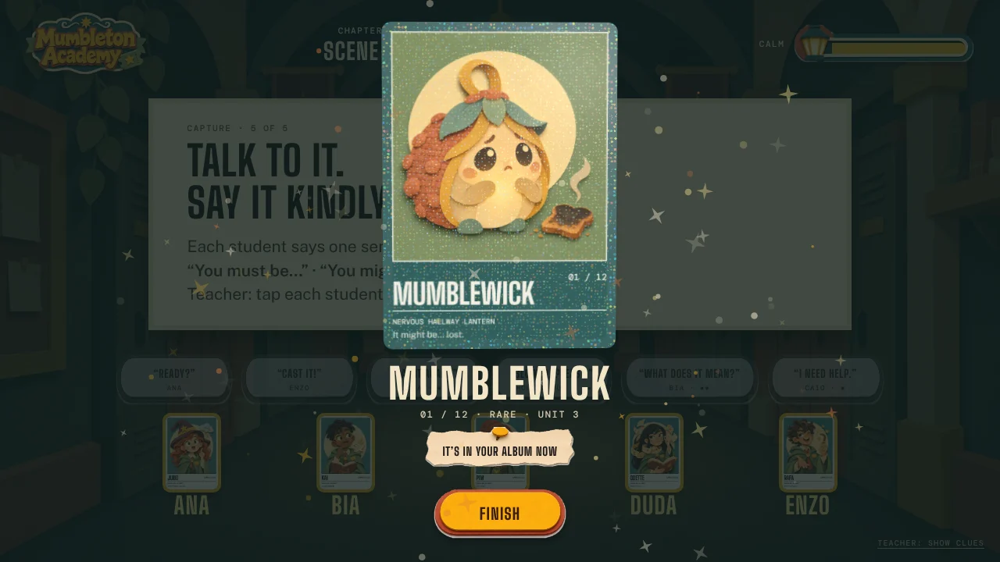
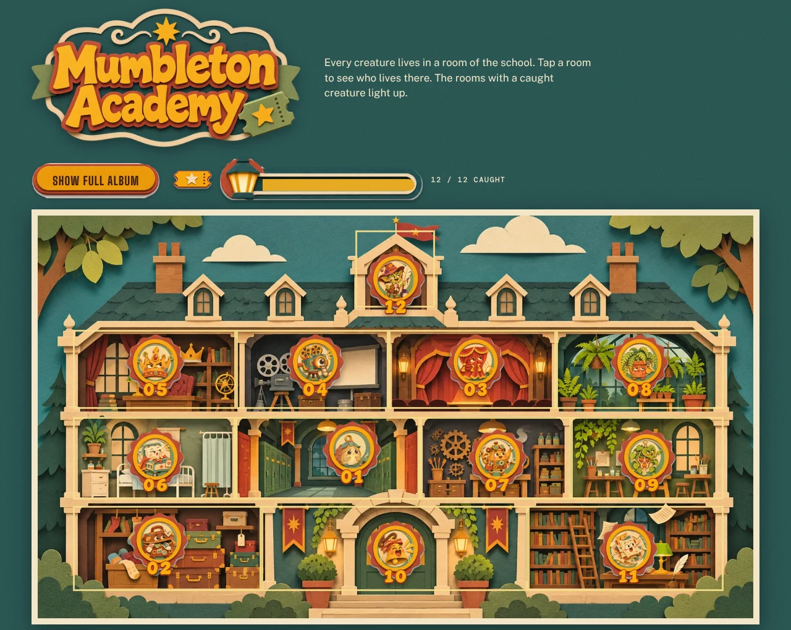

Os feitiços são frases em inglês. Quando alguém erra, o feitiço sai torto, e o erro vira piada.
O app narra. A professora não precisa ser a mestra do jogo.
Humor e coisas estranhas. Criaturas que ninguém espera encontrar no corredor.
Uma unidade, um capítulo. Cada capítulo treina a estrutura da unidade do Learning Well.
Exemplo do capítulo de hoje: “It must be… It might be… It can’t be…” para descobrir uma criatura invisível pelo som, pelo cheiro e pelo toque.
Mumbleton Academy is a school of magic, and its spells are not words in Latin. They are sentences in English. Say the right sentence, and the magic works.
The Academy keeps one great Spellbook. It holds twelve pages, and each page holds one spell. As long as the Spellbook is whole, the school is calm.
A Academia Mumbleton é uma escola de magia onde os feitiços são frases em inglês. O Livro de Feitiços guarda 12 páginas, uma para cada feitiço.
Mr. Typo is a small, sneaky goblin. He loves mixing up words, and he never says sorry. One night, he opened the Spellbook.
He shook it hard. The twelve pages flew out, and each one turned into a strange creature or object. They are hiding in every room of the school.
O Mr. Typo, um duende travesso, embaralhou o livro. As 12 páginas viraram 12 criaturas e objetos estranhos, escondidos nos cômodos da escola.
Every class, one creature appears. Listen to the clues, say the spell in English, and the creature calms down. Then its page goes back to the Spellbook.
When enough pages are back, the Spellbook opens a door. Behind it waits Mr. Typo. Can the apprentices fix his mess with their own words?
A cada aula, a turma recupera uma página. Quando algumas já voltaram, abre o confronto final com o Mr. Typo.
Cada página virou uma criatura ou objeto estranho, e cada uma mora em um cômodo da Academia. Esta é a temporada completa. Clique nas cartas para virar.
Cada carta aparece em primeiro plano, balança, vira e voa até o lugar do aluno. O nome do aluno fica abaixo da carta, com a classe e a frase que só ele pode dizer.
Oito aprendizes, cada um com um brilho próprio na carta. A professora não escolhe quem é quem: o sorteio decide. Clique em uma carta para virar: no verso fica a classe.
Cada aluno tem um cartão com código de barras, como no escape room, e o mesmo leitor. Ao bipar, o personagem aparece na lousa.
O cartão guarda a identidade: no capítulo seguinte o aluno continua com o mesmo aprendiz e a mesma classe.
Um barulho no corredor, e ninguém vê nada. A turma descobre a criatura pelos sentidos.
O jogo chama por sentido, não pelo nome do aluno. Ninguém fica exposto.



A barra de calma sobe a cada acerto do grupo. Quando enche, a criatura aparece.

A Mumblewick é uma lanterna nervosa. Cada aluno diz uma frase, a carta aparece com brilho e entra no álbum.
Passe o mouse e clique nas cartas para virar. Na lousa, elas respondem ao movimento. No papel, a gráfica reproduz com verniz e hot stamping.

Cada criatura mora em um cômodo. O cômodo acende quando a turma a captura.
12 capítulos, 12 criaturas. A última é o Mr. Typo.
A criatura é capturada em grupo, então o cômodo acende para todos na lousa.
Quem esteve no capítulo leva a figurinha da criatura. Quem faltou não leva aquela.
O que parece estranho? Os nomes dos alunos vêm do KAITS ou você cadastra? A espera de 9 a 10 segundos antes do empurrão está boa?